dentist in WI analysis
2024-11-15
Last updated: 2024-12-05
Checks: 6 1
Knit directory: Collaborations/
This reproducible R Markdown analysis was created with workflowr (version 1.7.1). The Checks tab describes the reproducibility checks that were applied when the results were created. The Past versions tab lists the development history.
The R Markdown file has unstaged changes. To know which version of
the R Markdown file created these results, you’ll want to first commit
it to the Git repo. If you’re still working on the analysis, you can
ignore this warning. When you’re finished, you can run
wflow_publish to commit the R Markdown file and build the
HTML.
Great job! The global environment was empty. Objects defined in the global environment can affect the analysis in your R Markdown file in unknown ways. For reproduciblity it’s best to always run the code in an empty environment.
The command set.seed(20210523) was run prior to running
the code in the R Markdown file. Setting a seed ensures that any results
that rely on randomness, e.g. subsampling or permutations, are
reproducible.
Great job! Recording the operating system, R version, and package versions is critical for reproducibility.
Nice! There were no cached chunks for this analysis, so you can be confident that you successfully produced the results during this run.
Great job! Using relative paths to the files within your workflowr project makes it easier to run your code on other machines.
Great! You are using Git for version control. Tracking code development and connecting the code version to the results is critical for reproducibility.
The results in this page were generated with repository version a3ec74c. See the Past versions tab to see a history of the changes made to the R Markdown and HTML files.
Note that you need to be careful to ensure that all relevant files for
the analysis have been committed to Git prior to generating the results
(you can use wflow_publish or
wflow_git_commit). workflowr only checks the R Markdown
file, but you know if there are other scripts or data files that it
depends on. Below is the status of the Git repository when the results
were generated:
Ignored files:
Ignored: .Rhistory
Ignored: analysis/.Rhistory
Ignored: analysis/2022_Mar2_Marinho_cache/
Unstaged changes:
Modified: analysis/2024_0701_survey_part3.Rmd
Note that any generated files, e.g. HTML, png, CSS, etc., are not included in this status report because it is ok for generated content to have uncommitted changes.
These are the previous versions of the repository in which changes were
made to the R Markdown
(analysis/2024_0701_survey_part3.Rmd) and HTML
(docs/2024_0701_survey_part3.html) files. If you’ve
configured a remote Git repository (see ?wflow_git_remote),
click on the hyperlinks in the table below to view the files as they
were in that past version.
| File | Version | Author | Date | Message |
|---|---|---|---|---|
| Rmd | ad68e53 | han | 2024-11-25 | 11/25/2024 |
| html | ad68e53 | han | 2024-11-25 | 11/25/2024 |
| Rmd | 370566a | han | 2024-11-22 | 11/22/2024 |
| html | 370566a | han | 2024-11-22 | 11/22/2024 |
| Rmd | 8e4cd77 | han | 2024-11-18 | 11/18/2024 |
| html | 8e4cd77 | han | 2024-11-18 | 11/18/2024 |
| Rmd | afbb9cc | han | 2024-11-18 | 11/18/2024 |
| html | afbb9cc | han | 2024-11-18 | 11/18/2024 |
Home
#Dentist_Survey=multiplesheets(file.path(root, "..\\2024\\202407\\state_survey\\Dentist Survey.xlsx"))
Dentist_Survey=multiplesheets("C:\\Shengtong\\Research\\AllCollaboration\\2024\\202407\\state_survey\\Dentist Survey.xlsx")
Dentist_in_WI=Dentist_Survey$`Dentist Survey` %>% filter(`direct care as a dentist in Wisconsin`=="Yes")
#save(Dentist_in_WI, file="C:\\Shengtong\\Research\\AllCollaboration\\2024\\202407\\Dentist_in_WI.RData")- select individuals who respond Yes to
direct care as a dentist in Wisconsin
#dim(Dentist_Survey$`Dentist Survey`)
load("C:\\Shengtong\\Research\\AllCollaboration\\2024\\202407\\Dentist_in_WI.RData")
variables=colnames(Dentist_in_WI)
data.frame(questions=variables)%>%
datatable(extensions = 'Buttons',
caption = "",
options = list(dom = 'Blfrtip',
buttons = c('copy', 'csv', 'excel', 'pdf', 'print'),
lengthMenu = list(c(10,25,50,-1),
c(10,25,50,"All"))))dim(Dentist_in_WI)[1] 2295 40- in total 2295 responses and 40 questions
variables_of_interest=variables[-c(6,7,19:37)]
dentist_in_WI_of_interest=Dentist_in_WI[,-c(6,7,19:37)]
num_non_missing=apply(dentist_in_WI_of_interest,2, function(x) sum(is.na(x)==F) )
data.frame(variable=variables_of_interest, non_missing=num_non_missing)%>%
datatable(extensions = 'Buttons',
caption = " Interesting variables with non-missing numbers ",
options = list(dom = 'Blfrtip',
buttons = c('copy', 'csv', 'excel', 'pdf', 'print'),
lengthMenu = list(c(10,25,50,-1),
c(10,25,50,"All"))))Race or Ethnicity
race=dentist_in_WI_of_interest %>% dplyr::count(`Describe Your Race or Ethnicity`) %>% mutate(prop=round(n/nrow(dentist_in_WI_of_interest),4))
asia=c("East Asian", "Filipino", "Hmong", "Laotian", "South Asian") # define south east asia countries
asia_race= race %>% filter(`Describe Your Race or Ethnicity` %in% asia)
race_new=race %>% filter(`Describe Your Race or Ethnicity` %in% asia==F) %>% add_row(`Describe Your Race or Ethnicity`="asia", n=asia_race %>% select(n) %>% sum(), prop=asia_race %>% select(prop) %>% sum()) # combine south east asia countries into one unit
race_new2=race_new %>% filter(n>10) %>% add_row(`Describe Your Race or Ethnicity`="other", n=race_new %>% filter(n<=10) %>% select(n) %>% sum(), prop=race_new %>% filter(n<=10) %>% select(prop) %>% sum()) # aggregate categories with n<=10
fig=plot_function("Describe Your Race or Ethnicity", race_new2, legend_rows = 4, var_name="Describe Your Race or Ethnicity")
fig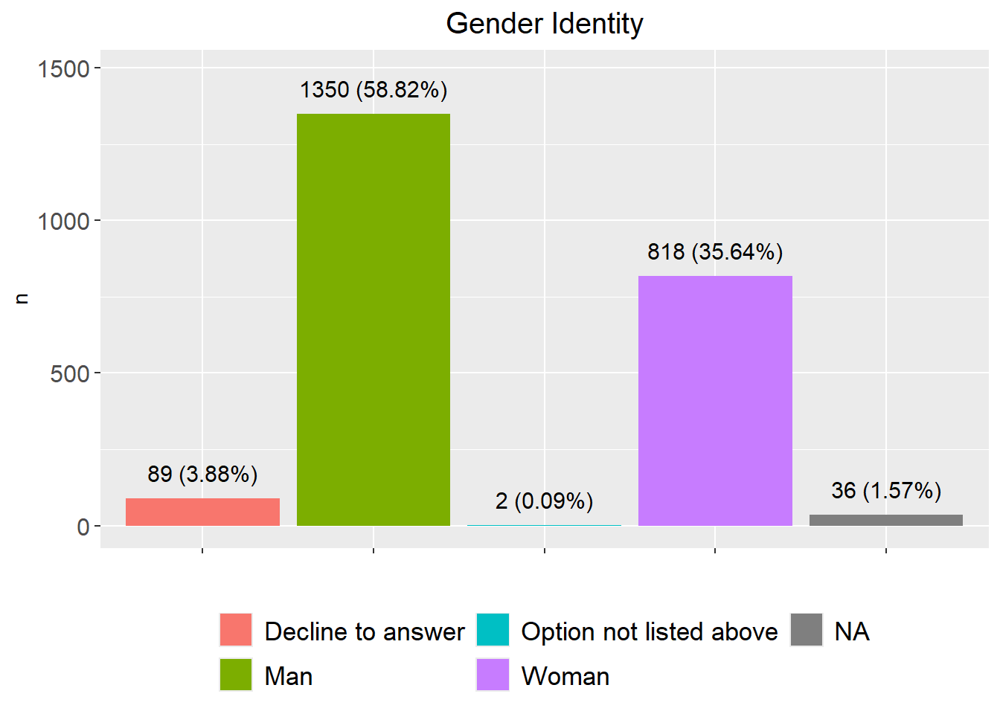
| Version | Author | Date |
|---|---|---|
| 370566a | han | 2024-11-22 |
fig=plot_function("Describe Your Race or Ethnicity (without White)", race_new2 %>% filter(`Describe Your Race or Ethnicity`!="White"), legend_rows = 3, var_name="Describe Your Race or Ethnicity")
fig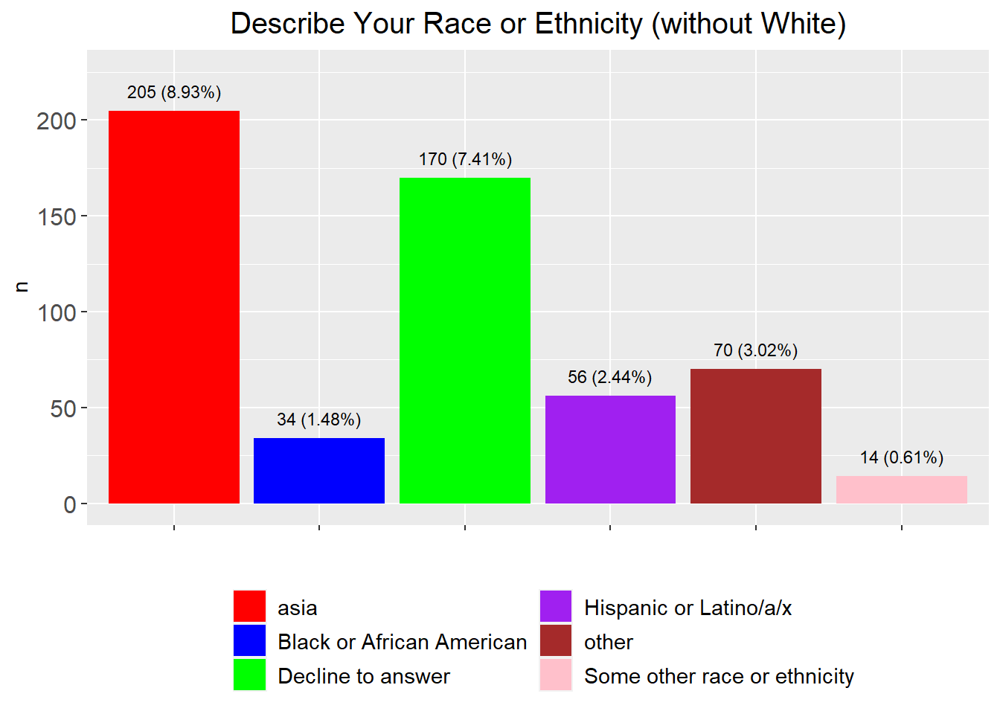
race_new2%>% arrange(desc(n))%>%
datatable(extensions = 'Buttons',
caption = "",
options = list(dom = 'Blfrtip',
buttons = c('copy', 'csv', 'excel', 'pdf', 'print'),
lengthMenu = list(c(10,25,50,-1),
c(10,25,50,"All"))))stopifnot(sum(race_new2$n)==nrow(Dentist_in_WI))asiaincludes “East Asian”, “Filipino”, “Hmong”, “Laotian”, “South Asian”otheraggregates categories with less than 10 responses.
association between race and other factors
race vs ages
date_of_birth=dentist_in_WI_of_interest$`Date of Birth`
year_of_birth=str_sub(date_of_birth, nchar(date_of_birth)-3, nchar(date_of_birth))
ages=2024-as.numeric(year_of_birth)
mean(ages)
ggplot(data.frame(ages=ages), aes(x=ages)) + geom_histogram(color="black", fill="blue")+
geom_vline(aes(xintercept=mean(ages)),
color="red", linetype="dashed", size=1)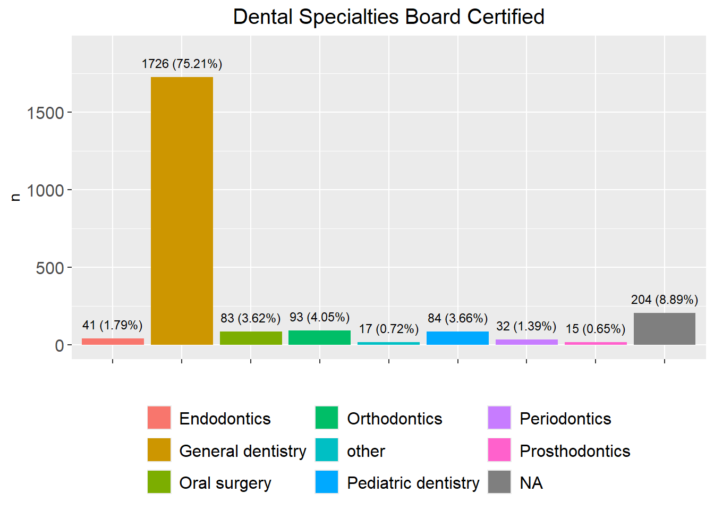
races=race_new2$`Describe Your Race or Ethnicity`
dentist_in_WI_of_interest1=dentist_in_WI_of_interest %>% mutate(ages=ages)
asia=c("East Asian", "Filipino", "Hmong", "Laotian", "South Asian") # define south east asia countries
count_race=function(data)
{
num=sapply(races[1:6], function(x) data %>% filter(`Describe Your Race or Ethnicity` %in% x) %>% nrow())
num[7]=data %>% filter(`Describe Your Race or Ethnicity` %in% asia) %>% nrow()
num[8]=data %>% filter(!`Describe Your Race or Ethnicity` %in% c(races[1:6], asia)) %>% nrow()
return(num)
}age_groups=paste("age", c("<40", "40-50", "50-60", "60-70", "<70"), sep=":")
age_groups_count=matrix(nrow=length(age_groups), ncol=length(races))
age_groups_count[1,]=count_race(dentist_in_WI_of_interest1 %>% filter(ages<40))
age_groups_count[2,]=count_race(dentist_in_WI_of_interest1 %>% filter(ages>=40 & ages<50))
age_groups_count[3,]=count_race(dentist_in_WI_of_interest1 %>% filter(ages>=50 & ages<60))
age_groups_count[4,]=count_race(dentist_in_WI_of_interest1 %>% filter(ages>=60 & ages<70))
age_groups_count[5,]=count_race(dentist_in_WI_of_interest1 %>% filter(ages>=70))
rownames(age_groups_count)=age_groups;
colnames(age_groups_count)=races
age_groups_count %>%
datatable(extensions = 'Buttons',
caption = "",
options = list(dom = 'Blfrtip',
buttons = c('copy', 'csv', 'excel', 'pdf', 'print'),
lengthMenu = list(c(10,25,50,-1),
c(10,25,50,"All")))) chisq.test(age_groups_count)
Pearson's Chi-squared test
data: age_groups_count
X-squared = 86.356, df = 28, p-value = 7.278e-08 stopifnot(sum(age_groups_count)==nrow(Dentist_in_WI))- small p value indicates significant association between ages and races
data.frame(age_groups_count[,-c(2,4, 6,8)]) %>%
datatable(extensions = 'Buttons',
caption = "",
options = list(dom = 'Blfrtip',
buttons = c('copy', 'csv', 'excel', 'pdf', 'print'),
lengthMenu = list(c(10,25,50,-1),
c(10,25,50,"All"))))sum(age_groups_count[,-c(2,4, 6,8)])[1] 2001prop=c(age_groups_count[,-c(2,4, 6,8)][,1]/(sum(age_groups_count[,-c(2,4, 6,8)][,1])),
age_groups_count[,-c(2,4, 6,8)][,2]/(sum(age_groups_count[,-c(2,4, 6,8)][,2])),
age_groups_count[,-c(2,4, 6,8)][,3]/(sum(age_groups_count[,-c(2,4, 6,8)][,3])),
age_groups_count[,-c(2,4, 6,8)][,4]/(sum(age_groups_count[,-c(2,4, 6,8)][,4])))
age_groups_count_subset=data.frame(races=rep(colnames(age_groups_count[,-c(2,4, 6,8)]), each=length(age_groups)), ages_group=paste(seq(1,5), rep(rownames(age_groups_count[,-c(2,4, 6,8)])), sep=":"), n=c(age_groups_count[,-c(2,4, 6,8)][,1], age_groups_count[,-c(2,4, 6,8)][,2], age_groups_count[,-c(2,4, 6,8)][,3], age_groups_count[,-c(2,4, 6,8)][,4]), prop=round(prop,2))
side_by_side_barplot3(age_groups_count_subset, title="age distrbituon by races", num_size=2)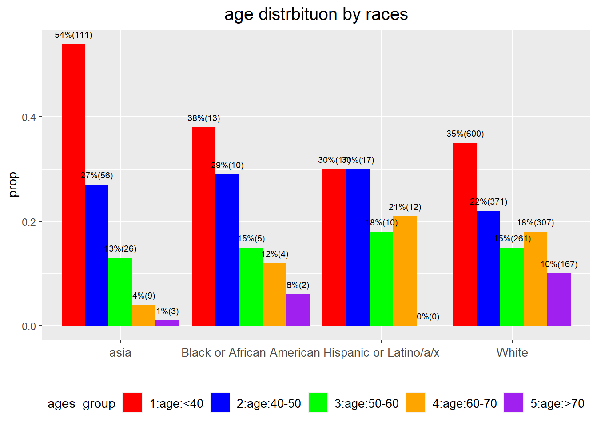
races vs gender
genders=unique(dentist_in_WI_of_interest1$`Gender Identity`)
genders_group_count=matrix(nrow=length(genders), ncol=length(races))
for (i in 1:length(genders))
genders_group_count[i,]=count_race(dentist_in_WI_of_interest1 %>% filter(`Gender Identity` %in% genders[i]))
rownames(genders_group_count)=genders;
colnames(genders_group_count)=races
genders_group_count %>%
datatable(extensions = 'Buttons',
caption = "",
options = list(dom = 'Blfrtip',
buttons = c('copy', 'csv', 'excel', 'pdf', 'print'),
lengthMenu = list(c(10,25,50,-1),
c(10,25,50,"All"))))sum(genders_group_count)[1] 2295chisq.test(genders_group_count)
Pearson's Chi-squared test
data: genders_group_count
X-squared = 2603.3, df = 28, p-value < 2.2e-16chisq.test(genders_group_count[1:2,])
Pearson's Chi-squared test
data: genders_group_count[1:2, ]
X-squared = 27.78, df = 7, p-value = 0.000241- small p value indicates significant association between genders and races
Gender Identity
gender=dentist_in_WI_of_interest1 %>% dplyr::count(`Gender Identity`) %>% mutate(prop=round(n/nrow(dentist_in_WI_of_interest1),4))
fig=plot_function("Gender Identity", gender, legend_rows = 2, var_name = "Gender Identity", num_size = 4, legend_text_size = 13)
fig
| Version | Author | Date |
|---|---|---|
| ad68e53 | han | 2024-11-25 |
gender%>% arrange(desc(n))%>%
datatable(extensions = 'Buttons',
caption = "",
options = list(dom = 'Blfrtip',
buttons = c('copy', 'csv', 'excel', 'pdf', 'print'),
lengthMenu = list(c(10,25,50,-1),
c(10,25,50,"All"))))sum(gender$n)[1] 2295Dental Specialties Board Certified
specialty=dentist_in_WI_of_interest1 %>% dplyr::count(`Dental Specialties Board Certified`) %>% mutate(prop=round(n/nrow(dentist_in_WI_of_interest1),4))
specialty2=specialty %>% filter(n>10) %>% add_row(`Dental Specialties Board Certified`="other", n=specialty %>% filter(n<=10) %>% select(n) %>% sum(), prop=specialty %>% filter(n<=10) %>% select(prop) %>% sum()) # aggregate categories with n<=10
fig=plot_function("Dental Specialties Board Certified", specialty2, legend_rows = 3, var_name = "Dental Specialties Board Certified", legend_text_size = 12)
fig
specialty2%>% arrange(desc(n))%>%
datatable(extensions = 'Buttons',
caption = "",
options = list(dom = 'Blfrtip',
buttons = c('copy', 'csv', 'excel', 'pdf', 'print'),
lengthMenu = list(c(10,25,50,-1),
c(10,25,50,"All"))))sum(specialty2$n)[1] 2295otheraggregates categories with less than 10 responses, such asGeneral dentistry; Oral surgery
Best Describes This Practice Setting
practice_setting=dentist_in_WI_of_interest1 %>% dplyr::count(`Best Describes This Practice Setting`) %>% mutate(prop=round(n/nrow(dentist_in_WI_of_interest1),4))
threshold=20
practice_setting2=practice_setting %>% filter(n>threshold) %>% add_row(`Best Describes This Practice Setting`="other", n=practice_setting %>% filter(n<=threshold) %>% select(n) %>% sum(), prop=practice_setting %>% filter(n<=threshold) %>% select(prop) %>% sum()) # aggregate categories with n<=10
fig=plot_function("Best Describes This Practice Setting", practice_setting2, legend_rows = 4, var_name = "Best Describes This Practice Setting")
fig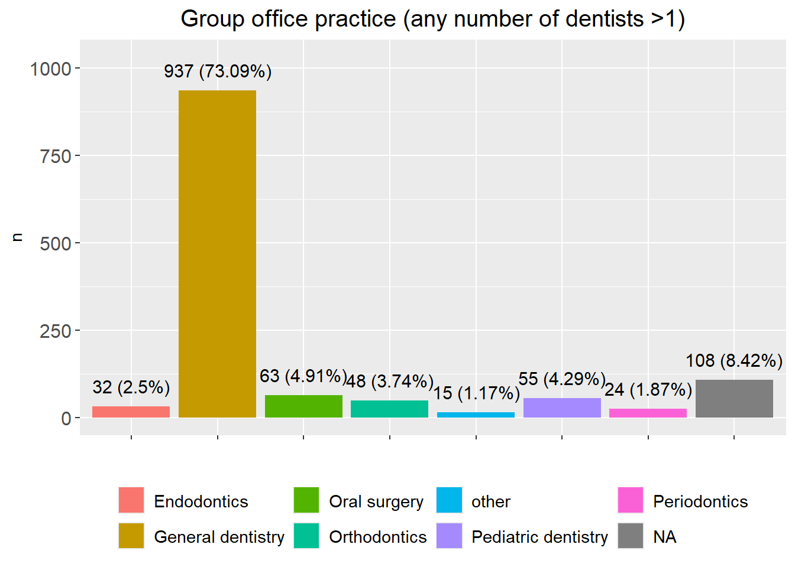
| Version | Author | Date |
|---|---|---|
| ad68e53 | han | 2024-11-25 |
practice_setting2%>% arrange(desc(n))%>%
datatable(extensions = 'Buttons',
caption = "",
options = list(dom = 'Blfrtip',
buttons = c('copy', 'csv', 'excel', 'pdf', 'print'),
lengthMenu = list(c(10,25,50,-1),
c(10,25,50,"All"))))sum(practice_setting2$n)[1] 2295other aggregates categories with responses less than
20.
practice setting distribution
man_practice_setting=dentist_in_WI_of_interest1 %>% filter(`Gender Identity`=="Man") %>% dplyr::count(`Best Describes This Practice Setting`)
settings=c("Group office practice (any number of dentists >1)", "Solo office practice")
nums=sapply(settings, function(x) man_practice_setting %>% filter(`Best Describes This Practice Setting`==x) %>% select(n) %>% pull())
nums[4]=man_practice_setting$n[is.na(man_practice_setting$`Best Describes This Practice Setting`)]
nums[3]=sum(man_practice_setting$n)-sum(nums[1:2])-nums[4]
man_practice_setting2=data.frame(class=c(settings, "others", "NA"), n=nums) %>% mutate(prop=round(n/sum(nums),4))
woman_practice_setting=dentist_in_WI_of_interest1 %>% filter(`Gender Identity`=="Woman") %>% dplyr::count(`Best Describes This Practice Setting`)
nums=sapply(settings, function(x) woman_practice_setting %>% filter(`Best Describes This Practice Setting`==x) %>% select(n) %>% pull())
nums[4]=woman_practice_setting$n[is.na(woman_practice_setting$`Best Describes This Practice Setting`)]
nums[3]=sum(woman_practice_setting$n)-sum(nums[1:2])-nums[4]
woman_practice_setting2=data.frame(class=c(settings, "others", "NA"), n=nums) %>% mutate(prop=round(n/sum(nums),4))
practice_setting_combine=data.frame(class=rep(c(settings, "others", "NA"), 2), n=c(man_practice_setting2$n, woman_practice_setting2$n), prop=c(man_practice_setting2$prop, woman_practice_setting2$prop), gender=rep(c("man", "women"), each=4))
side_by_side_barplot2(practice_setting_combine, title="practice setting", legend_rows = 2)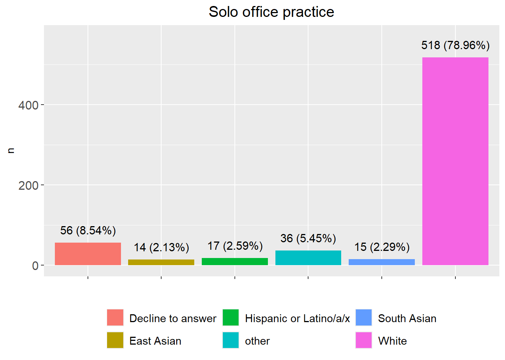
white_practice_setting=dentist_in_WI_of_interest1 %>% filter(`Describe Your Race or Ethnicity`=="White") %>% dplyr::count(`Best Describes This Practice Setting`)
settings=c("Group office practice (any number of dentists >1)", "Solo office practice")
nums=sapply(settings, function(x) white_practice_setting %>% filter(`Best Describes This Practice Setting`==x) %>% select(n) %>% pull())
nums[4]=white_practice_setting$n[is.na(white_practice_setting$`Best Describes This Practice Setting`)]
nums[3]=sum(white_practice_setting$n)-sum(nums[1:2])-nums[4]
white_practice_setting2=data.frame(class=c(settings, "others", "NA"), n=nums) %>% mutate(prop=round(n/sum(nums),4))
asia=c("East Asian", "Filipino", "Hmong", "Laotian", "South Asian") # define south east asia countries
asia_practice_setting=dentist_in_WI_of_interest1 %>% filter(`Describe Your Race or Ethnicity`%in% asia) %>% dplyr::count(`Best Describes This Practice Setting`)
nums=sapply(settings, function(x) asia_practice_setting %>% filter(`Best Describes This Practice Setting`==x) %>% select(n) %>% pull())
nums[4]=asia_practice_setting$n[is.na(asia_practice_setting$`Best Describes This Practice Setting`)]
nums[3]=sum(asia_practice_setting$n)-sum(nums[1:2])-nums[4]
asia_practice_setting2=data.frame(class=c(settings, "others", "NA"), n=nums) %>% mutate(prop=round(n/sum(nums),4))
practice_setting_combine=data.frame(class=rep(c(settings, "others", "NA"), 2), n=c(white_practice_setting2$n, asia_practice_setting2$n), prop=c(white_practice_setting2$prop, asia_practice_setting2$prop), gender=rep(c("White", "Asia"), each=4))
side_by_side_barplot2(practice_setting_combine, title="practice setting", legend_rows = 2)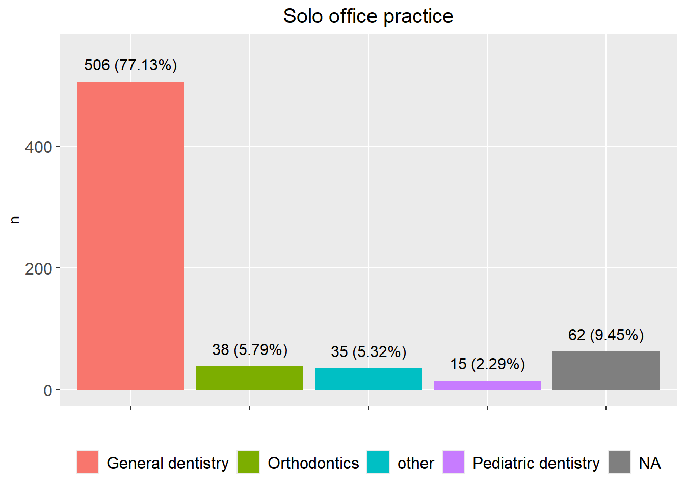
| Version | Author | Date |
|---|---|---|
| ad68e53 | han | 2024-11-25 |
group office practice
group_practice=dentist_in_WI_of_interest1 %>% dplyr::filter(`Best Describes This Practice Setting`=="Group office practice (any number of dentists >1)")
group_practice2=group_practice%>% dplyr::count(`Gender Identity`) %>% mutate(prop=round(n/nrow(group_practice),4))
fig=plot_function(title="Group office practice (any number of dentists >1)", group_practice2,1, var_name="Gender Identity", num_size=4, legend_text_size = 13)
fig
group_practice2%>% arrange(desc(n))%>%
datatable(extensions = 'Buttons',
caption = "",
options = list(dom = 'Blfrtip',
buttons = c('copy', 'csv', 'excel', 'pdf', 'print'),
lengthMenu = list(c(10,25,50,-1),
c(10,25,50,"All"))))
sum(group_practice2$n)group_practice=dentist_in_WI_of_interest1 %>% dplyr::filter(`Best Describes This Practice Setting`=="Group office practice (any number of dentists >1)")
group_practice2=group_practice%>% dplyr::count(`Describe Your Race or Ethnicity`) %>% mutate(prop=round(n/nrow(group_practice),4))
threshold=10
group_practice3=group_practice2 %>% filter(n>threshold) %>% add_row(`Describe Your Race or Ethnicity`="other", n=group_practice2 %>% filter(n<=threshold) %>% select(n) %>% sum(), prop=group_practice2 %>% filter(n<=threshold) %>% select(prop) %>% sum()) # aggregate categories with n<=threshold
fig=plot_function(title="Group office practice (any number of dentists >1)", group_practice3,2, var_name="Describe Your Race or Ethnicity", num_size = 4)
fig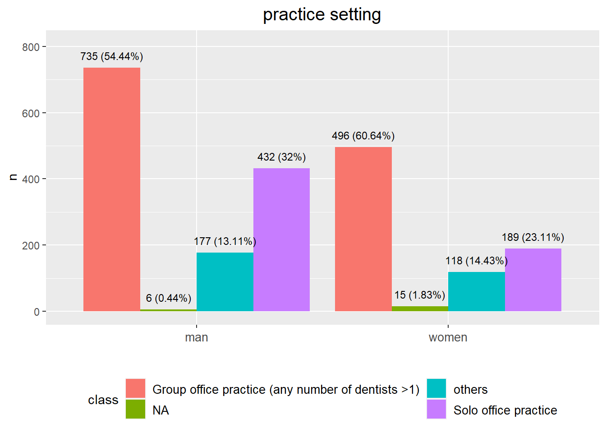
| Version | Author | Date |
|---|---|---|
| ad68e53 | han | 2024-11-25 |
group_practice3%>% arrange(desc(n))%>%
datatable(extensions = 'Buttons',
caption = "",
options = list(dom = 'Blfrtip',
buttons = c('copy', 'csv', 'excel', 'pdf', 'print'),
lengthMenu = list(c(10,25,50,-1),
c(10,25,50,"All"))))sum(group_practice3$n)[1] 1282group_practice=dentist_in_WI_of_interest1 %>% dplyr::filter(`Best Describes This Practice Setting`=="Group office practice (any number of dentists >1)")
group_practice2=group_practice%>% dplyr::count(`Dental Specialties Board Certified`) %>% mutate(prop=round(n/nrow(group_practice),4))
threshold=10
group_practice3=group_practice2 %>% filter(n>threshold) %>% add_row(`Dental Specialties Board Certified`="other", n=group_practice2 %>% filter(n<=threshold) %>% select(n) %>% sum(), prop=group_practice2 %>% filter(n<=threshold) %>% select(prop) %>% sum()) # aggregate categories with n<=threshold
fig=plot_function(title="Group office practice (any number of dentists >1)", group_practice3,2, var_name="Dental Specialties Board Certified", num_size = 4)
fig
| Version | Author | Date |
|---|---|---|
| ad68e53 | han | 2024-11-25 |
group_practice3%>% arrange(desc(n))%>%
datatable(extensions = 'Buttons',
caption = "",
options = list(dom = 'Blfrtip',
buttons = c('copy', 'csv', 'excel', 'pdf', 'print'),
lengthMenu = list(c(10,25,50,-1),
c(10,25,50,"All"))))sum(group_practice3$n)[1] 1282solo office practice
solo_practice=dentist_in_WI_of_interest1 %>% dplyr::filter(`Best Describes This Practice Setting`=="Solo office practice")
solo_practice2=solo_practice%>% dplyr::count(`Gender Identity`) %>% mutate(prop=round(n/nrow(solo_practice),4))
fig=plot_function(title="Solo office practice", solo_practice2,1, var_name="Gender Identity", num_size = 4, legend_text_size = 13)
fig
| Version | Author | Date |
|---|---|---|
| ad68e53 | han | 2024-11-25 |
solo_practice2%>% arrange(desc(n))%>%
datatable(extensions = 'Buttons',
caption = "",
options = list(dom = 'Blfrtip',
buttons = c('copy', 'csv', 'excel', 'pdf', 'print'),
lengthMenu = list(c(10,25,50,-1),
c(10,25,50,"All"))))sum(solo_practice2$n)[1] 656solo_practice=dentist_in_WI_of_interest1 %>% dplyr::filter(`Best Describes This Practice Setting`=="Solo office practice")
solo_practice2=solo_practice%>% dplyr::count(`Describe Your Race or Ethnicity`) %>% mutate(prop=round(n/nrow(solo_practice),4))
threshold=10
solo_practice3=solo_practice2 %>% filter(n>threshold) %>% add_row(`Describe Your Race or Ethnicity`="other", n=solo_practice2 %>% filter(n<=threshold) %>% select(n) %>% sum(), prop=solo_practice2 %>% filter(n<=threshold) %>% select(prop) %>% sum()) # aggregate categories with n<=threshold
fig=plot_function(title="Solo office practice", solo_practice3,2, var_name="Describe Your Race or Ethnicity", num_size = 4)
fig
solo_practice3%>% arrange(desc(n))%>%
datatable(extensions = 'Buttons',
caption = "",
options = list(dom = 'Blfrtip',
buttons = c('copy', 'csv', 'excel', 'pdf', 'print'),
lengthMenu = list(c(10,25,50,-1),
c(10,25,50,"All"))))sum(solo_practice3$n)[1] 656solo_practice=dentist_in_WI_of_interest1 %>% dplyr::filter(`Best Describes This Practice Setting`=="Solo office practice")
solo_practice2=solo_practice%>% dplyr::count(`Dental Specialties Board Certified`) %>% mutate(prop=round(n/nrow(solo_practice),4))
threshold=10
solo_practice3=solo_practice2 %>% filter(n>threshold) %>% add_row(`Dental Specialties Board Certified`="other", n=solo_practice2 %>% filter(n<=threshold) %>% select(n) %>% sum(), prop=solo_practice2 %>% filter(n<=threshold) %>% select(prop) %>% sum()) # aggregate categories with n<=threshold
fig=plot_function(title="Solo office practice", solo_practice3,1, var_name="Dental Specialties Board Certified", num_size = 4, legend_text_size = 12)
fig
solo_practice3%>% arrange(desc(n))%>%
datatable(extensions = 'Buttons',
caption = "",
options = list(dom = 'Blfrtip',
buttons = c('copy', 'csv', 'excel', 'pdf', 'print'),
lengthMenu = list(c(10,25,50,-1),
c(10,25,50,"All"))))sum(solo_practice3$n)[1] 656geographical distribution
wisconsin_urban_rural_zip=multiplesheets("C:\\Shengtong\\Research\\OralPublicHealth\\Dental_Emergency_visit\\Wisconsin-Urban-Rural-zip.xlsx")region_code=unique(wisconsin_urban_rural_zip$`Table 1`$`2014 ZCTA-based WURC Code`)
all_code=wisconsin_urban_rural_zip$`Table 1`$`2014 ZCTA-based WURC Code`
all_code[which(all_code=="R2/R1")]="R2" # rename regions
all_code[which(all_code=="Urban/R1")]="Urban"
all_code[which(all_code=="Metro W-O-W/R1")]="Metro W-O-W"
all_code[which(all_code=="R3/R1")]="R3"
all_code[which(all_code=="R3/R2/R1")]="R3"
all_code[which(all_code=="Urban/R2")]="Urban"
all_code[which(all_code=="R1/Urban")]="R1"
wisconsin_urban_rural_zip_data=wisconsin_urban_rural_zip$`Table 1` %>% mutate(new_region_code=all_code)
region_code_update=unique(all_code)region_code_zip=sapply(region_code_update, function(x) wisconsin_urban_rural_zip_data %>% filter(new_region_code==x) %>% select(`ZCTA/\r\nZIPCode`)) # extract zip codes
#zip_in_hygie_only=setdiff(hygienist_zip, unlist(region_code_zip)) #### zip codes in the survey, but not in wisconsin urban rural zip data
# Dental_Hygienist$`Dental H` %>% filter(`5-digit Zip code` %in% zip_in_hygie_only)%>% filter(`Gender Identity`=="Man" | `Gender Identity`=="Woman") %>% nrow() these man/woman in the survey, but missed in wisconsin urban/rural data
dentist_zip=unique(dentist_in_WI_of_interest1 %>% select(`5-digit Zip code` ) %>% pull)
#sum(is.na(Dentist_Survey_zipcode)==T) 893 zip codes are missing
zip_in_dentist_only=setdiff(dentist_zip, unlist(region_code_zip)) #### zip codes in the survey, but not in Wisconsin urban rural zip data
dentist_in_WI_of_interest1 %>% filter(`5-digit Zip code` %in% zip_in_dentist_only)%>% filter(`Gender Identity`=="Man" | `Gender Identity`=="Woman") %>% nrow() # these 886 man/woman in the survey, but missed in wisconsin urban/rural data[1] 265data.frame(zip_in_dentist_only)%>%
datatable(extensions = 'Buttons',
caption = " Zip codes in the survey, but not in Wisconsin zip code list",
options = list(dom = 'Blfrtip',
buttons = c('copy', 'csv', 'excel', 'pdf', 'print'),
lengthMenu = list(c(10,25,50,-1),
c(10,25,50,"All"))))- among 77 zip codes missing, i.e. not in Wisconsin zip code list,
some code (46/77=59.7%) have sub-code like
53574-8881, but Wisconsin zip code don’t have sub-code.
region_code_zip=sapply(region_code_update, function(x) wisconsin_urban_rural_zip_data %>% filter(new_region_code==x) %>% select(`ZCTA/\r\nZIPCode`)) # extract zip codes
#zip_in_hygie_only=setdiff(hygienist_zip, unlist(region_code_zip)) #### zip codes in the survey, but not in wisconsin urban rural zip data
# Dental_Hygienist$`Dental H` %>% filter(`5-digit Zip code` %in% zip_in_hygie_only)%>% filter(`Gender Identity`=="Man" | `Gender Identity`=="Woman") %>% nrow() these man/woman in the survey, but missed in wisconsin urban/rural data
dentist_zip_raw=unique(dentist_in_WI_of_interest1 %>% select(`5-digit Zip code` ) %>% pull)
dentist_zip=str_sub(dentist_zip_raw, 1, 5)
zip_in_dentist_only=setdiff(dentist_zip, unlist(region_code_zip)) #### zip codes in the survey, but not in Wisconsin urban rural zip data
Dentist_Survey_zipcode=dentist_in_WI_of_interest1 %>% select(`5-digit Zip code`) %>% pull()
dentist_in_WI_of_interest1 %>% filter(`5-digit Zip code` %in% zip_in_dentist_only)%>% filter(`Gender Identity`=="Man" | `Gender Identity`=="Woman") %>% nrow() # these 886 man/woman in the survey, but missed in wisconsin urban/rural data[1] 218data.frame(zip_in_dentist_only)%>%
datatable(extensions = 'Buttons',
caption = " Zip codes in the survey, but not in Wisconsin zip code list",
options = list(dom = 'Blfrtip',
buttons = c('copy', 'csv', 'excel', 'pdf', 'print'),
lengthMenu = list(c(10,25,50,-1),
c(10,25,50,"All"))))dentist_zip_in_dentist_only=sapply(zip_in_dentist_only, function(x) Dentist_Survey$`Dentist Survey` %>% filter(`5-digit Zip code` %in% x)%>% filter(`Gender Identity`=="Man" | `Gender Identity`=="Woman") %>% nrow())Gender Identity
gender_geo=sapply(region_code_zip, function(x) dentist_in_WI_of_interest1 %>% filter(`5-digit Zip code` %in% x) %>% select(`Gender Identity`))
gender_prop=sapply(gender_geo, function(x) c(sum(x=="Man", na.rm=T), sum(x=="Woman", na.rm=T)))
gender_geo_data=data.frame(geo=rep(region_code_update,each=2), num=as.vector(gender_prop), gender=rep(c("Man", "Woman"), length(region_code_update))) %>% drop_na()
man_total=sum(gender_geo_data %>% filter(gender=="Man") %>% select(num) %>% pull())
woman_total=sum(gender_geo_data %>% filter(gender=="Woman") %>% select(num) %>% pull())
prop=numeric()
prop[seq(1,11,by=2)]=gender_geo_data$num[seq(1,11,by=2)]/man_total
prop[seq(2,12,by=2)]=gender_geo_data$num[seq(2,12,by=2)]/woman_total
gender_geo_data=gender_geo_data %>% mutate(prop=round(prop,4))
fig=side_by_side_barplot(gender_geo_data, angle=30, num_size = 2.5, x_text_size=12, legend_text_size=12, title="Dentist_Survey")
fig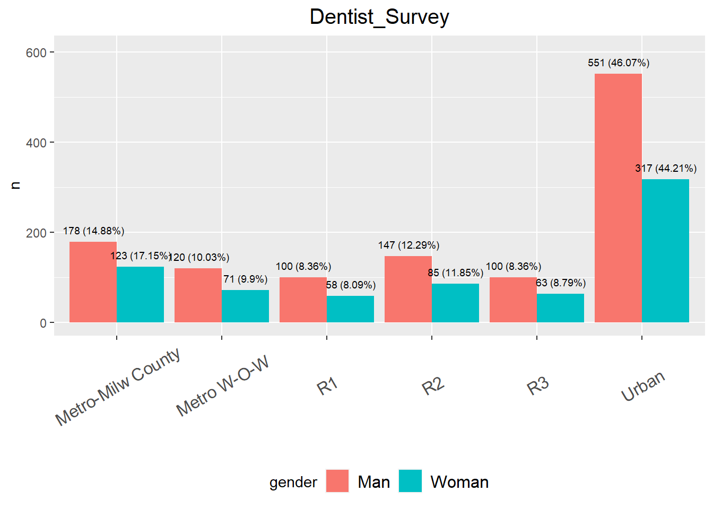
gender_geo_data%>%
datatable(extensions = 'Buttons',
caption = "Dentist",
options = list(dom = 'Blfrtip',
buttons = c('copy', 'csv', 'excel', 'pdf', 'print'),
lengthMenu = list(c(10,25,50,-1),
c(10,25,50,"All"))))sum(gender_geo_data$num)[1] 1913specialty distribution
specialty=c("General dentistry", "Endodontics", "Orthodontics","Periodontics", "Prosthodontics", "Pediatric dentistry", "Oral surgery")
specialty_geo=sapply(region_code_zip, function(x) dentist_in_WI_of_interest1 %>% filter(`5-digit Zip code` %in% x) %>% filter(`Dental Specialties Board Certified` %in% specialty) %>% select(`Dental Specialties Board Certified`))
specialty_prop=sapply(specialty_geo, function(x) c(sum(x=="General dentistry"), sum(x=="Endodontics"), sum(x=="Orthodontics"), sum(x=="Periodontics"), sum(x=="Prosthodontics"), sum(x=="Pediatric dentistry"), sum(x=="Oral surgery")))
specialty_geo_data=data.frame(geo=rep(region_code_update,each=length(specialty)), num=as.vector(specialty_prop), spect=rep(specialty, length(region_code_update))) %>% drop_na()
figures=list()
pie_chart=list()
for (i in 1:length(region_code_update))
{
figures[[i]]=ggplot(specialty_geo_data %>% filter(geo %in% region_code_update[i]), aes(x=spect, y=num, fill=spect)) +geom_bar(position = "dodge", stat="identity")+
ylim(c(0, max(specialty_geo_data %>% filter(geo %in% region_code_update[i]) %>% select(num)%>% pull())+10))+
# facet_grid("geo")+
ylab("n")+xlab("")+
theme(legend.position="")+
theme(axis.text.x = element_text(angle = 60, vjust = 0.5, size=10))+
geom_text(aes(label=num), position=position_dodge(width=0.9), vjust=-0.25, size=3)+ # add numbers over bars
ggtitle(region_code_update[i])+
theme(plot.title = element_text(hjust = 0.5, size=15)) #center the title
pie_data=specialty_geo_data %>% filter(geo %in% region_code_update[i])
pie_data <- pie_data %>%
mutate(per=`num`/sum(`num`)) %>%
arrange(desc(spect))
pie_data$label <- scales::percent(pie_data$per)
pie_chart[[i]]=ggplot(data=pie_data)+
geom_bar(aes(x="", y=per, fill=spect), stat="identity", width = 1)+
coord_polar("y", start=0)+
theme_void()+
geom_text(aes(x=1, y = cumsum(per) - per/2, label=label))
}
ggarrange(figures[[1]], figures[[2]], figures[[3]], figures[[4]], figures[[5]], figures[[6]], ncol=2)$`1`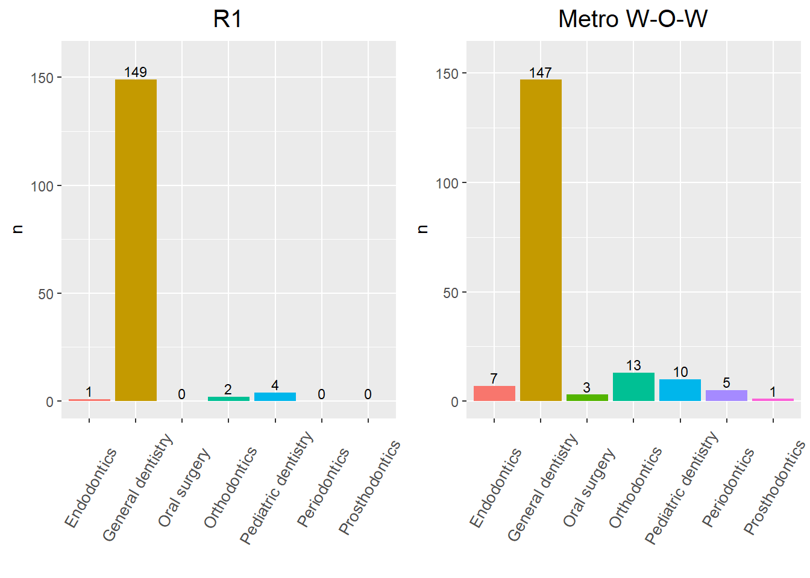
$`2`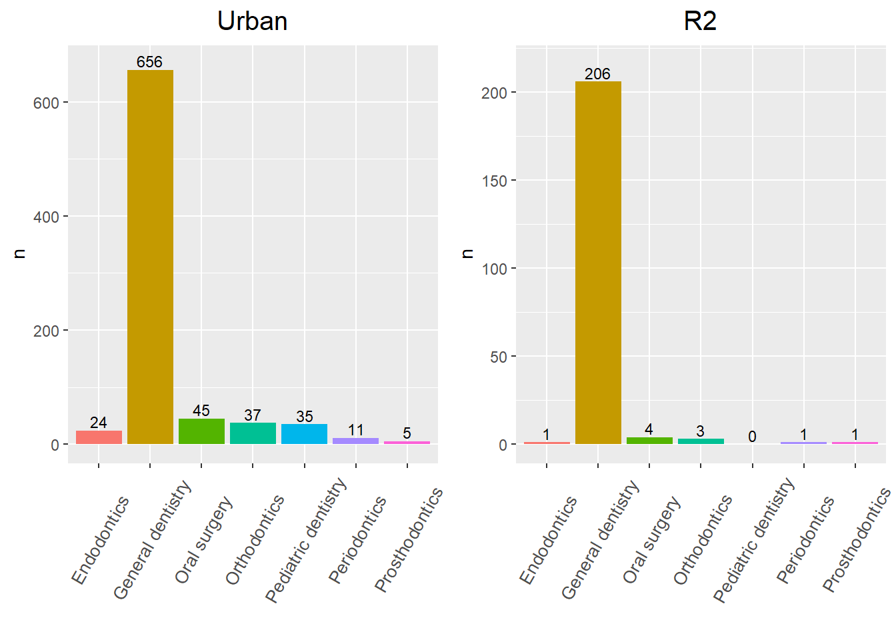
$`3`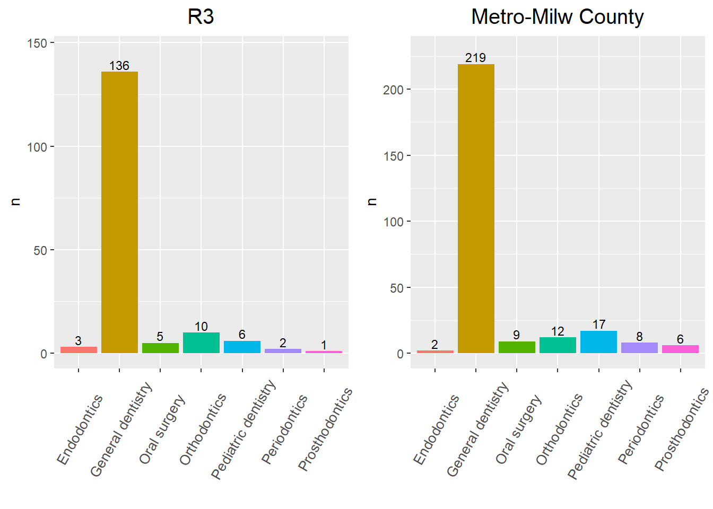
attr(,"class")
[1] "list" "ggarrange"gender_geo_data%>%
datatable(extensions = 'Buttons',
caption = "",
options = list(dom = 'Blfrtip',
buttons = c('copy', 'csv', 'excel', 'pdf', 'print'),
lengthMenu = list(c(10,25,50,-1),
c(10,25,50,"All"))))sum(gender_geo_data$num)[1] 1913
sessionInfo()R version 4.3.2 (2023-10-31 ucrt)
Platform: x86_64-w64-mingw32/x64 (64-bit)
Running under: Windows 10 x64 (build 19045)
Matrix products: default
locale:
[1] LC_COLLATE=English_United States.utf8
[2] LC_CTYPE=English_United States.utf8
[3] LC_MONETARY=English_United States.utf8
[4] LC_NUMERIC=C
[5] LC_TIME=English_United States.utf8
time zone: America/Chicago
tzcode source: internal
attached base packages:
[1] grid stats graphics grDevices utils datasets methods
[8] base
other attached packages:
[1] VennDiagram_1.7.3 futile.logger_1.4.3 condsurv_1.0.0
[4] devtools_2.4.5 usethis_2.2.2 tidycmprsk_1.0.0
[7] gtsummary_1.7.2 ggsurvfit_1.0.0 irr_0.84.1
[10] lpSolve_5.6.20 readxl_1.4.3 cowplot_1.1.2
[13] matrixStats_1.2.0 gridExtra_2.3 DT_0.31
[16] rstatix_0.7.2 ggpubr_0.6.0 kableExtra_1.3.4
[19] lubridate_1.9.3 forcats_1.0.0 stringr_1.5.1
[22] dplyr_1.1.4 purrr_1.0.2 readr_2.1.4
[25] tidyr_1.3.0 tibble_3.2.1 ggplot2_3.4.4
[28] tidyverse_2.0.0 rprojroot_2.0.4
loaded via a namespace (and not attached):
[1] formatR_1.14 remotes_2.4.2.1 rlang_1.1.2
[4] magrittr_2.0.3 git2r_0.33.0 compiler_4.3.2
[7] systemfonts_1.0.5 vctrs_0.6.5 rvest_1.0.3
[10] profvis_0.3.8 pkgconfig_2.0.3 fastmap_1.1.1
[13] backports_1.4.1 ellipsis_0.3.2 labeling_0.4.3
[16] utf8_1.2.4 promises_1.2.1 rmarkdown_2.25
[19] sessioninfo_1.2.2 tzdb_0.4.0 xfun_0.41
[22] cachem_1.0.8 jsonlite_1.8.8 highr_0.10
[25] later_1.3.2 broom_1.0.5 R6_2.5.1
[28] bslib_0.6.1 stringi_1.8.3 car_3.1-2
[31] pkgload_1.3.3 jquerylib_0.1.4 cellranger_1.1.0
[34] Rcpp_1.0.11 knitr_1.45 httpuv_1.6.13
[37] Matrix_1.6-1.1 splines_4.3.2 timechange_0.2.0
[40] tidyselect_1.2.0 rstudioapi_0.15.0 abind_1.4-5
[43] yaml_2.3.8 miniUI_0.1.1.1 pkgbuild_1.4.3
[46] lattice_0.21-9 shiny_1.8.0 withr_2.5.2
[49] evaluate_0.23 lambda.r_1.2.4 survival_3.5-7
[52] urlchecker_1.0.1 xml2_1.3.6 pillar_1.9.0
[55] carData_3.0-5 whisker_0.4.1 generics_0.1.3
[58] hms_1.1.3 munsell_0.5.0 scales_1.3.0
[61] xtable_1.8-4 glue_1.6.2 tools_4.3.2
[64] webshot_0.5.5 ggsignif_0.6.4 fs_1.6.3
[67] crosstalk_1.2.1 colorspace_2.1-0 cli_3.6.2
[70] workflowr_1.7.1 futile.options_1.0.1 fansi_1.0.6
[73] broom.helpers_1.14.0 viridisLite_0.4.2 svglite_2.1.3
[76] gt_0.10.0 gtable_0.3.4 sass_0.4.8
[79] digest_0.6.33 farver_2.1.1 htmlwidgets_1.6.4
[82] memoise_2.0.1 htmltools_0.5.7 lifecycle_1.0.4
[85] httr_1.4.7 mime_0.12